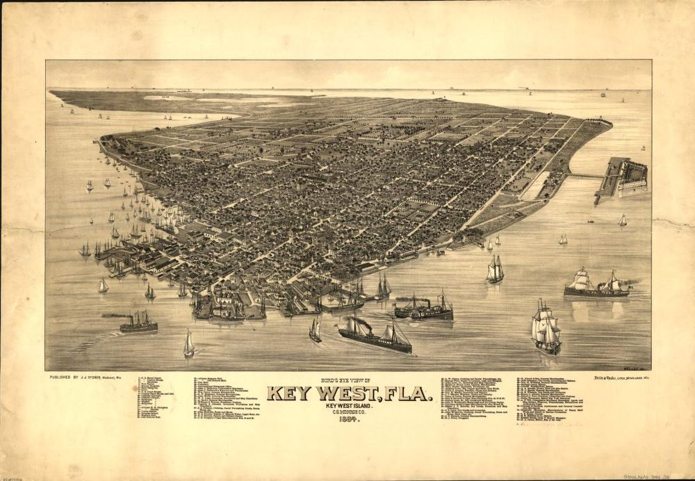
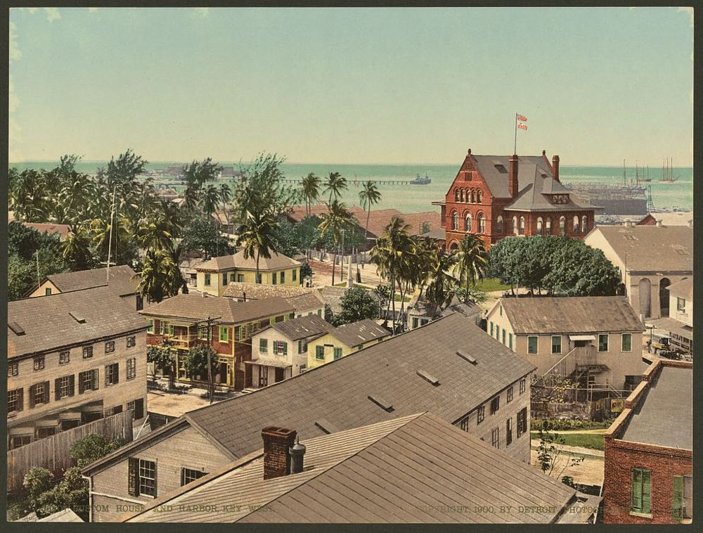

Our production of Twelfth Night is set in the Florida Keys, specifically , the home of a 10-day celebration called Fantasy Fest. To fully engage with our new setting, we have to learn a little about its context, history, and culture. So just what is up with the Florida Keys?
Author's note: all of this information is valuable, but if you're in a time crunch, skip ahead to Why does this matter to us? and work back to the information you personally find relevant. Happy reading!
Just what is up with the Florida Keys?

- Early economy: in the early days of Florida's settlement, the Keys were based in maritime industries like fishing, turtling, sponging, and , as well as cigar manufacturing.
- Who lived there: the people of the Keys were predominantly Cuban and Bahamian. Local fishermen were called "conchs," a term that later expanded to include all native residents of the Keys.
- The decline: as industry in the north grew and many of the naturally sourced items found in the Keys lost their value, the economy began to struggle severely. Key West was a maritime city founded by northern businessmen, and its infrastructure didn't support the industrial economy that was taking the country by storm. But its "antiquity" would later become its savior from financial ruin.
- Becoming a destination: the Keys weren't truly propelled into destination status until the 1920s and 30s, when of the formulated a plan to reinvent the islands.
- The Great Depression had destroyed the already struggling economy, and Stone realized that drastic changes had to be made to keep the archipelago from falling apart.
- The Keys had already attracted writers from up north (including ), who were charmed by their quaintness compared to the hustle and bustle of industry back home.
- The pitch: Stone capitalized on that to market the Keys as an "exotic" experience: "Many Americans imagine Key West to be a foreign country, but it is an island they can drive their cars to on U.S. highways, without passports or currency exchange."

"Cars do not seem to belong in the maze of narrow one way streets, nineteenth-century wooden houses, and tropical gardens, and the town still feels oriented to the harbor."
Want to learn more about the history of the Keys? Check out this article.
Aesthetics of the Keys
"'Key West is Key West is Key West.' Which being interpreted means that, like ancient China, this island has always swallowed all invaders and always will."
Local writer Colin Jameson, 1953
"Key West is now a tourist town, one million people visit it each year, but it is still a town of contrast and contradiction, threat and carelessness and charm… There is a sense of adventure here, of excess and individuality. It's odd. Actually odd. It is a rather dirty town and has very little dignity, but it has style."
Novelist Joy Williams, resident of Key West, 1987
What do the Keys look like now?
| Key West today: quick statistics | |
|---|---|
| Median individual income | $47,000 |
| Average single-family home cost | $1,016,112 |
| Key West households living below the poverty line | 11% |
| Key West households living below the ALICE threshold (Asset Limited, Income Constrained, Employed) | 44% |
- Two worlds: the Florida Keys of today are home to the ultra-wealthy (predominantly transplants, second homeowners, and vacationers), and to locals, many of whom struggle to get by under an incredibly high cost of living.
- Where the money is: the most lavish neighborhoods are mostly on and , but Key West has its fair share of expensive properties.
- The priciest houses are on the west side of the island. Old Town, Casa Marina, and The Meadows each have houses currently selling for upwards of 12 million dollars.
- On Sunset Key, an offshoot of Key West known for its pricey luxury homes, the median home sold is worth $6.6 million, and one house in particular has an estimated market value of $22 million (Zillow).
- Real estate agents advertising homes in Key West use phrases like "luxury paradise," "tropical retreat," and "island luxury."
- Vacation rentals: old homes are often bought up and turned into vacation properties, because the laws regulating rentals are weak and any potential policy changes are fought against with campaign contributions from companies with vested interests, like Airbnb and VRBO. Meanwhile, many houses that aren't vacation properties sit vacant for most of the year while their owners spend summers further north. Read about the impact of rental properties on the Keys.
- Bahama Village: neighborhoods like are undergoing .
- Key West's total population is about 13% Black, and most Black residents historically lived in Bahama Village. But as housing prices have risen and more and more people have been pushed out, the neighborhood is now 56% white. More on gentrification in Bahama Village.
- : this has led to tension among Black locals as they weigh the best path forward, preserving their neighborhood's culture while preventing its economic collapse. Conversations about who should be in charge of the festival prompted this question:
- Is it better to stick to tradition and uplift small businesses, at the risk of an encroaching financial decline?
- Or is it better to promote expansion and improve finances, at the risk of losing the very thing you're trying to protect, local culture?
- Want to learn more? Read about Goombay's history or watch part of the City Commission meeting (39:22 to 1:37:42). I watched the first 30 minutes and got a good idea of the debate.
What's the deal with Fantasy Fest?
[Section still to write.]
Why does this matter to us?
A.k.a. TL;DR
- The Keys became what they are out of a necessity to survive. Key West may be a place of luxury, escape, and freedom for many, but it is a place of stagnance and immobility for others, and its economy is horrifyingly vulnerable to change. For example, unemployment rates jumped from 2.9% to 26.2% in a month in the early days of COVID-19.
- Our show has to contend with that. The wealthy areas it's set in are not accessible to all of the island's residents, and Twelfth Night deals heavily with class, wealth, and social status. If we only engage with "luxury living" in the Keys, we do a disservice to the concerns of the original text and risk overlooking a population that is essential to the history, culture, and economy of the island.
- What do the Keys mean to our characters?
- How long has each character been there?
- Who is born into money, who comes into it, and who experiences neither?
- Our charge as creatives is to reckon with these juxtapositions in ways that feel true to the characters and world of the play.
Viola and immigration
Research in progress.
Content note: this section discusses discrimination and violence against LGBTQ+ people, including the killing of a transgender teenager. Please take care when reading.
- The question: to better understand the possibility of Viola immigrating to Key West, we can look at the environmental factors and the social and political attitudes toward gender and identity that might influence her decision to migrate, and at how immigration works and how immigrants integrate into the USA.
- Why the Caribbean: because the play is set in Key West, we look closely at its Caribbean neighbors as the closest source of immigration. We can identify the social, cultural, and political approaches that shaped the lived experiences of queer people and furthered migration.
Attitudes toward queer people in the Caribbean
- Studies of the lives of LGBT+ people in the Caribbean emphasize how discrimination, gender roles, and violence limit freedom of speech and safety. They show cases of transgender people leaving their families because of threats of violence, other forms of discrimination, and legal inequalities. That gives us a social and political framework for Viola's possible move to Key West, especially for gender non-conformity.
- Paul Chaney's study looks at the human rights situation of LGBTQ+ people in the Caribbean from a civil society perspective, using commentary from Caribbean civil society from 2015 to 2020. What it found:
- LGBTQ+ discrimination was the most common human rights problem. "Discrimination was the first-ranked rights pathology in the CSO discourse, accounting for almost a quarter (24.7%) of quasi-sentences" (Chaney 376).
- Second was changing discriminatory laws that target LGBTQ+ people (20.5%) (Chaney 377).
- Among the effects of discrimination, the study mentions housing discrimination: rejection by landlords, lack of security, and homelessness. It also mentions limits on gender expression, including historic laws in places like Guyana that prohibited people from dressing differently from their gender at birth.
- Colonialism is a key issue. Most of the Caribbean islands were colonized by European powers, which shaped their laws, religious doctrines, and attitudes toward gender roles and LGBTQ+ identity. Religious conservatism has been a major cause of prejudice against the LGBTQ+ community.
- These discriminatory practices leave the community open to intimidation, violence, and fear of violence, to the point that some flee their country.
Laws and queer rights in the Caribbean
For an interactive world map where you can look up specific laws, bans, and rankings for each country, see Equaldex.
| Country | Changing legal gender | Gender-affirming care | Legal recognition of non-binary gender | Hate crime protection |
|---|---|---|---|---|
| Cuba | From 2008 until September 2026, individuals could legally change their gender only after gender-affirming surgery, by submitting a request and presenting evidence to the court that includes clinical records, proof of surgery, and before-and-after photographs. Since September 17, 2026, a new law no longer requires surgery (Equaldex). | Legal, but restricted for minors since 2008 | Not legally recognized | Before December 1, 2022, no active protections. As of 2022, "There is legal protection from hate crimes based on sexual orientation and gender identity under article 80.1(n) of the Penal Code." |
| Bahamas | Illegal, and there is no legal gender recognition | Legal; both hormone therapy and surgery are provided | Not legally recognized | No hate crime protection |
| Dominican Republic | Legal gender change is currently illegal | Legal but banned for minors, with limited practice overall | Not allowed, including non-binary gender | No hate crime protection |
| Jamaica | A person's gender identity is not legally recognized. For all official purposes, gender assigned at birth overrules gender identity. | Legal | Not legally recognized | No hate crime protection |
Real cases and testimonies
A few links that help show immigration rooted in threat and discrimination, and the search for better ways to live:
- Testimony of Cuban transgender women (video).
- Jamaica came up again and again in the research as one of the Caribbean islands that continues to face challenges and discrimination. This New York Times Room for Debate piece looks at how that prejudice affected the life of Dwayne Jones, a 16-year-old transgender teenager who was killed after attending a party as a woman, and notes that there is no accountability for such acts of violence against the LGBTQ community.
To be continued…